What you need to know (specification)
- 1.1understand how living organisms share the following characteristics: they require nutrition; they respire; they excrete their waste; they respond to their surroundings; they move; they control their internal conditions; they reproduce; they grow and develop
- 1.2describe the common features shown by eukaryotic organisms: plants, animals, fungi and protoctists
- 1.3describe the common features shown by prokaryotic organisms such as bacteria
- 1.4understand the term ‘pathogen’ and know that pathogens may include fungi, bacteria, protoctists and viruses
1a Characteristics of living organisms 1.1
All living organisms, from simple bacteria to plants and animals, carry out the same eight life processes. Remember them as MRS C GREN:
Movement
An action that changes the position or place of the organism or part of it.


Reproduction
Making more organisms of the same kind.

Sensitivity
Detecting changes in the surroundings (stimuli) and responding to them.
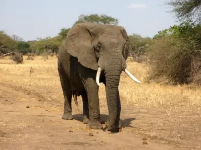
Control
Keeping internal conditions, like temperature and water content, constant.

Growth
A permanent increase in size, and developing (becoming more complex).

Respiration
Chemical reactions in cells that release energy from nutrients such as glucose.
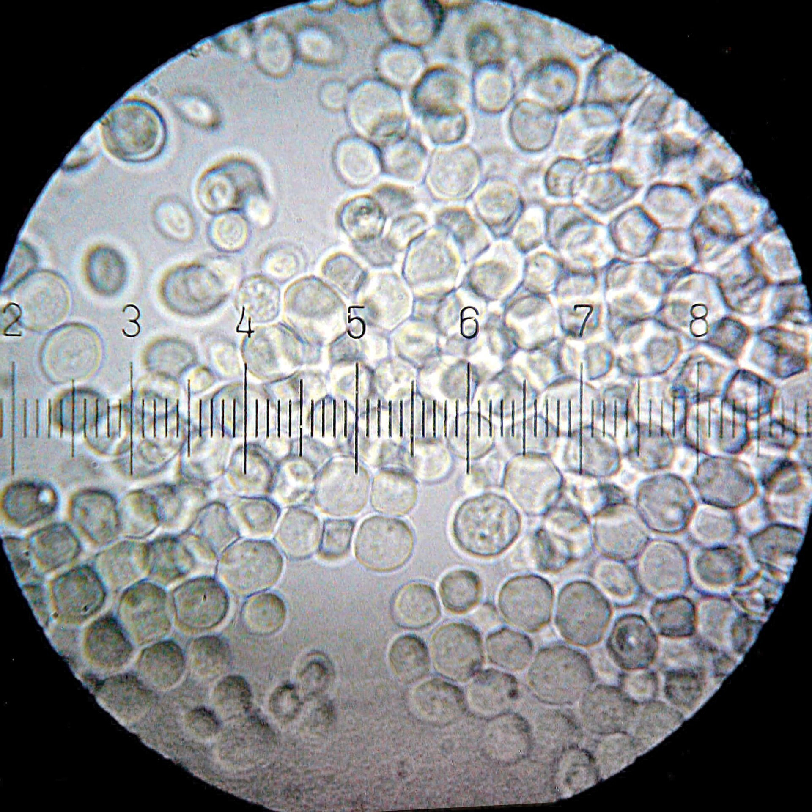
Excretion
Getting rid of waste made by the body’s own reactions.
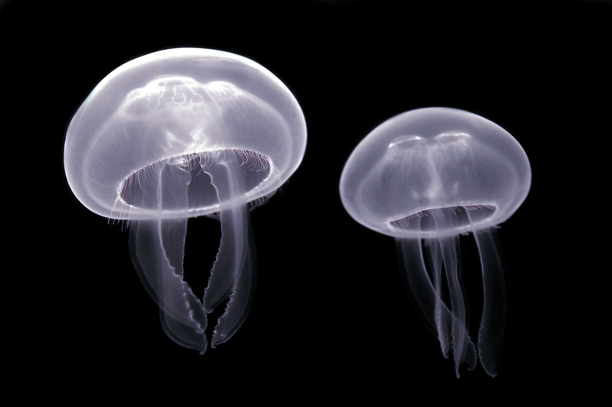
Nutrition
Taking in or making food for energy and to build new cells.
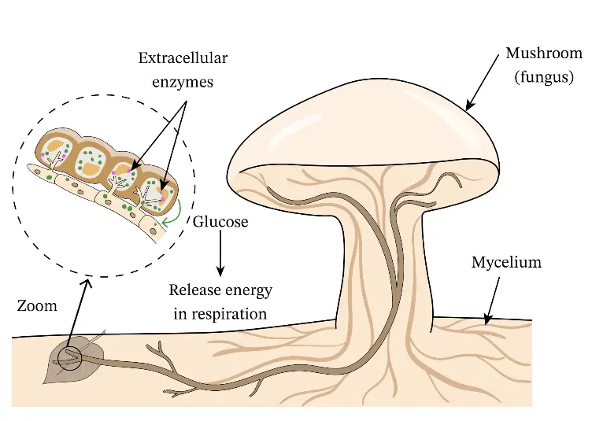
Watch life processes happening
Think about it: alive or not?

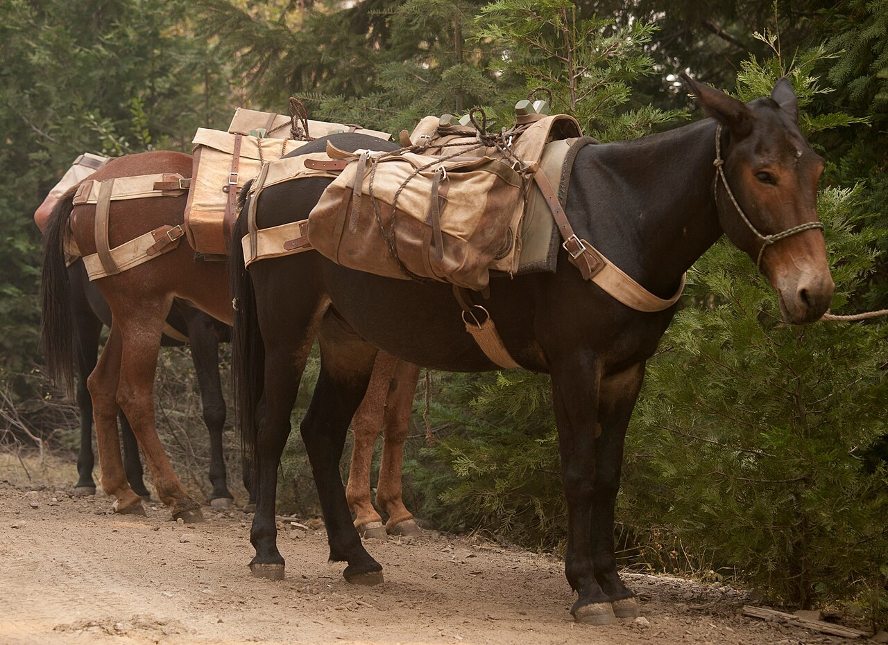
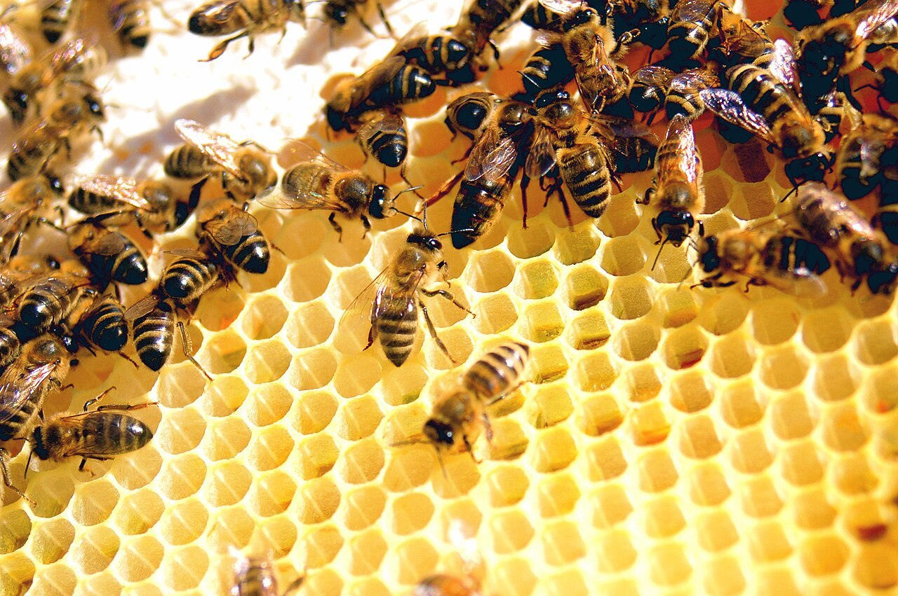


True or false?
 GameMRS C GREN gamewordwall.net ↗
GameMRS C GREN gamewordwall.net ↗
Are jellyfish alive? 1.1
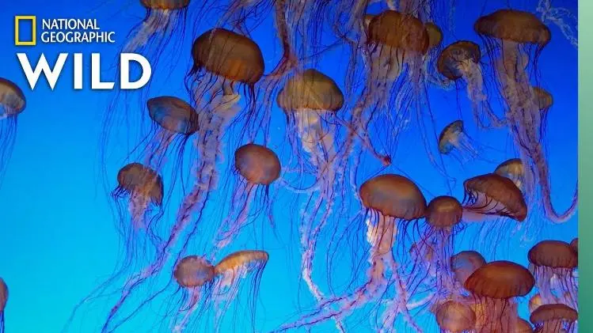
Read the passage
There are over 2000 types of jellyfish around the world. Jellyfish swim by rhythmic pulsations of the umbrella. The tentacles on a jellyfish are covered with millions of stinging cells. Jellyfish usually feed on small fish that get caught in their tentacles or sometimes even other jellyfish.
Jellyfish take oxygen into their cells directly from the water around them. Jellyfish don’t actually have brains but they do have something called a nerve net which can coordinate responses. Most jellyfish release sperm or eggs directly into the water around them. Jellyfish have no blood, bones or hearts. But some of them can do incredible things like glow in the dark.
Jellyfish are some of the oldest living creatures on Earth and have probably been around on the planet for over 600 million years. Jellyfish numbers are increasing as they are one of the few living organisms that are thriving with warmer, more acidic oceans.
Show mark scheme
Show mark scheme
Show mark scheme
Excretion is removing toxic metabolic waste made by chemical reactions inside cells (like CO2 from respiration and urea in urine) — NOT passing faeces (that's egestion!).
Quick check
0 / 2 done1b Variety of living organisms 1.21.3
All living organisms can be classified into groups based on their features. In Edexcel IGCSE Biology there are 5 kingdoms: animals, plants, fungi, bacteria and protoctists. Viruses are non-living, so they are classified separately.
Eukaryotic: cells have a nucleus: animals, plants, fungi and protoctists.
Prokaryotic: cells have no nucleus: bacteria.
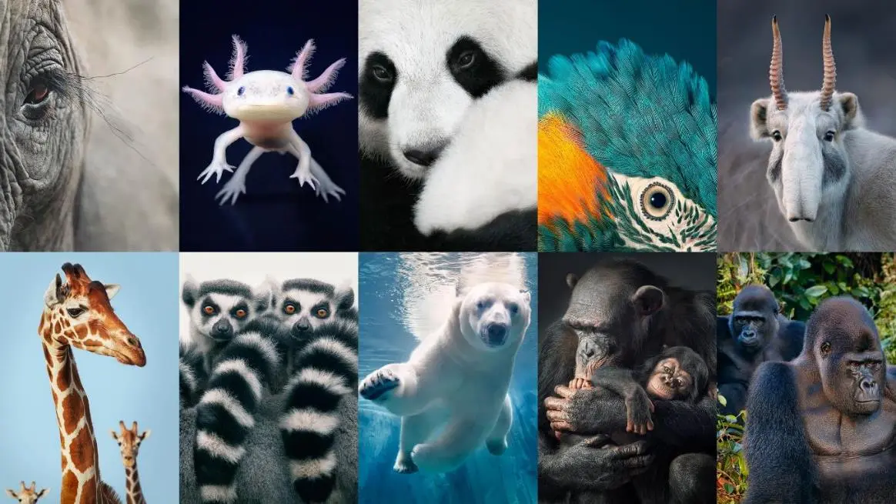
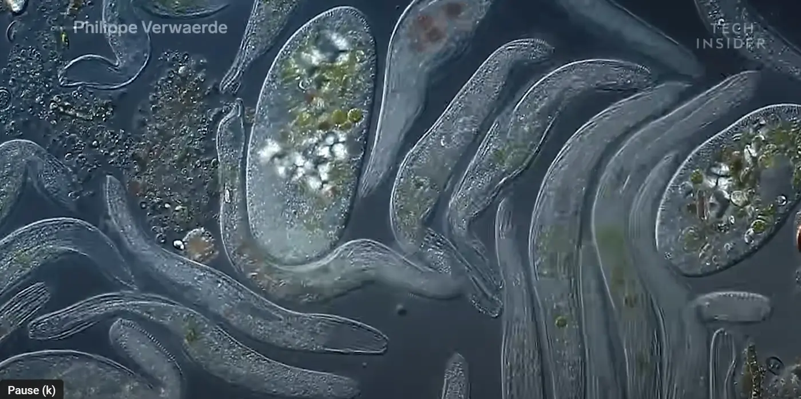
Explore the kingdoms
Choose a group to see its cells and features. The drawings change each time, so you get used to cells looking a little different.
All the groups at a glance
| Animals | Plants | Fungi | Bacteria | Protoctists | |
|---|---|---|---|---|---|
| Cells | Multicellular | Multicellular | Mostly hyphae; some single-celled | Single-celled | Mostly single-celled |
| Nucleus | Yes | Yes | Yes (many in each hypha) | No: circular chromosome + plasmids | Yes |
| Cell wall | None | Cellulose | Chitin | Yes (peptidoglycan) | Some |
| Chloroplasts | No | Yes | No | No (a few photosynthesise) | Some (e.g. Chlorella) |
| Feeding | Eat other organisms | Photosynthesis | Saprotrophic | Mostly feed on other organisms | Varies |
| Carbohydrate store | Glycogen | Starch / sucrose | Glycogen | – | – |
| Examples | Humans, housefly, mosquito | Maize, peas, beans | Mucor, yeast | Lactobacillus, Pneumococcus | Amoeba, Chlorella, Plasmodium |
Quick check
0 / 2 doneAnimals 1.2
- They are multicellular.
- Heterotrophic: get nutrition by feeding on other organisms.
- Capable of movement from one place to another.
- Usually have nervous coordination.
- No cell wall and no chloroplasts, so they do not photosynthesise.
- Often store carbohydrate as glycogen.
- Examples: mammals (humans) and insects (housefly, mosquito).

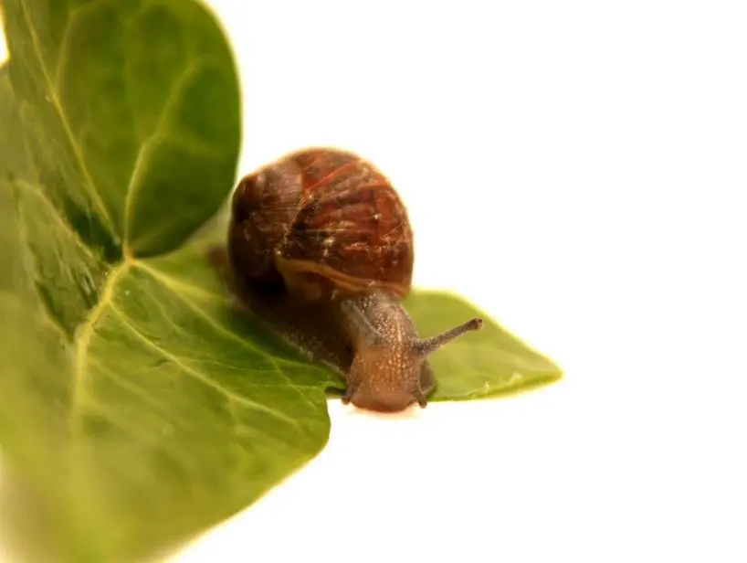
Spotlight: the Greenland shark
The Greenland shark lives in the cold, deep water of the North Atlantic and Arctic Oceans. It grows about 1 cm a year and can live for several hundred years, longer than any other known vertebrate. Many carry a parasite attached to their eyes. In Iceland its meat is fermented and dried to make hákarl, because the fresh meat is poisonous.
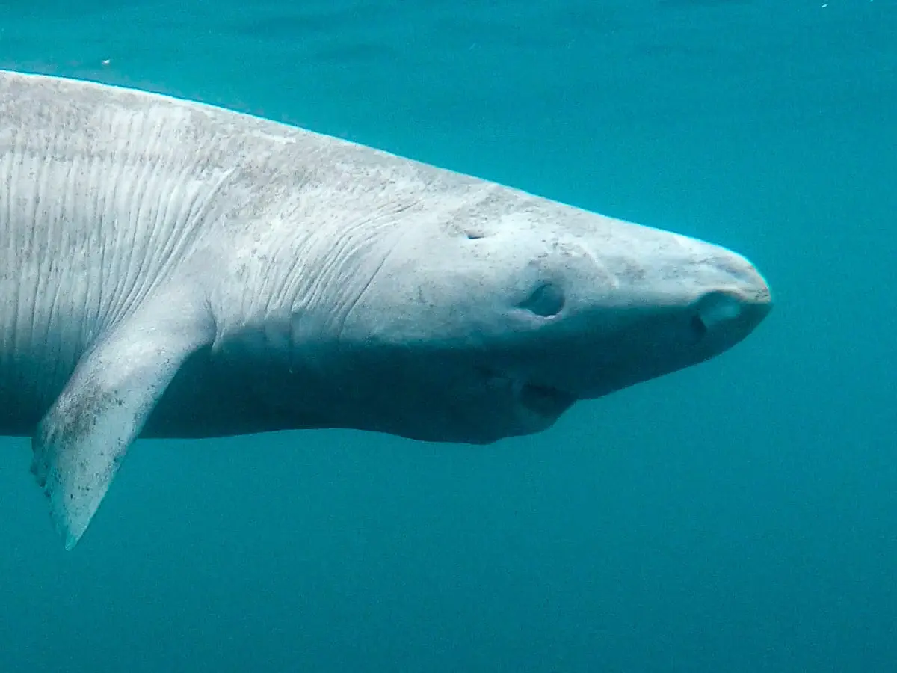


Plants 1.2
- They are multicellular.
- Autotrophic: make their own food by photosynthesis.
- Generally unable to move from one place to another.
- They do not have nervous coordination.
- Cells have cellulose cell walls and chloroplasts containing chlorophyll.
- Store carbohydrate as starch or sucrose.
- Examples: flowering plants such as a cereal (maize) and a herbaceous legume (peas or beans).
Non-flowering plants
Mosses, liverworts and ferns have no flowers or seeds: they reproduce with spores. Conifers have no flowers but make seeds in cones. Click a photo to see it bigger.

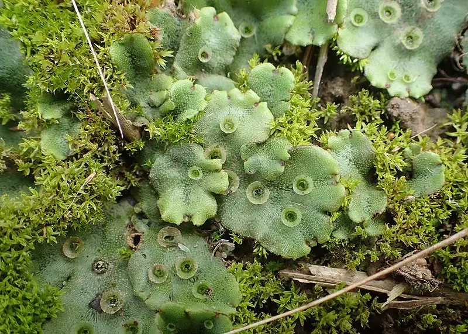

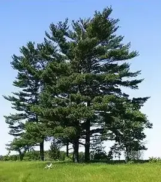


Flowering plants (angiosperms)
The biggest group: they have flowers and make seeds inside fruits. Most trees, grasses, crops and garden flowers are flowering plants. The exam examples are a cereal (maize) and a herbaceous legume (peas or beans).
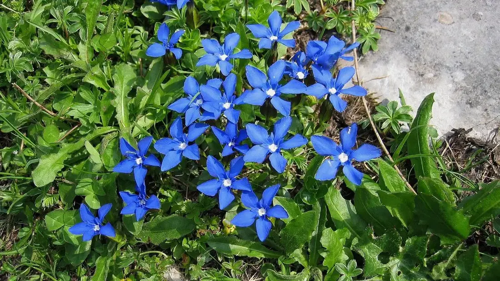


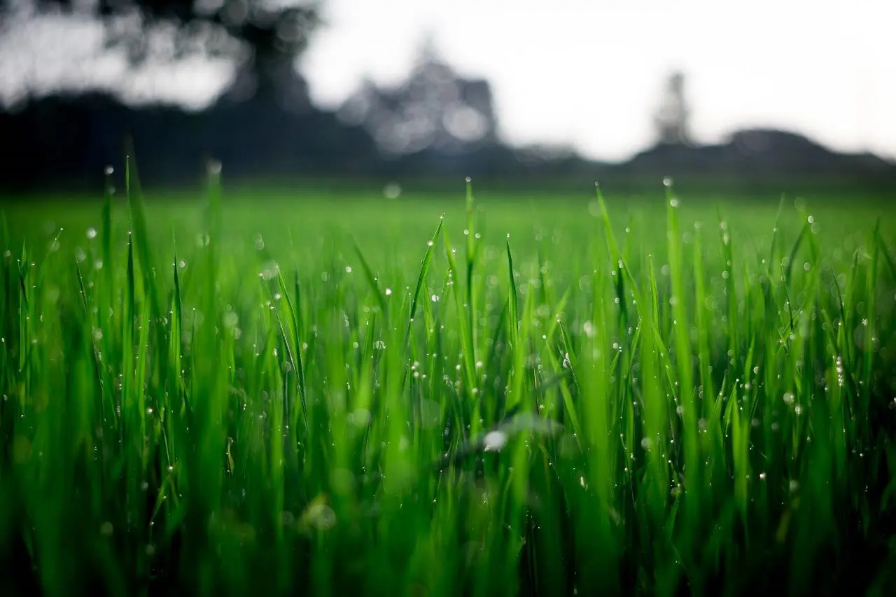
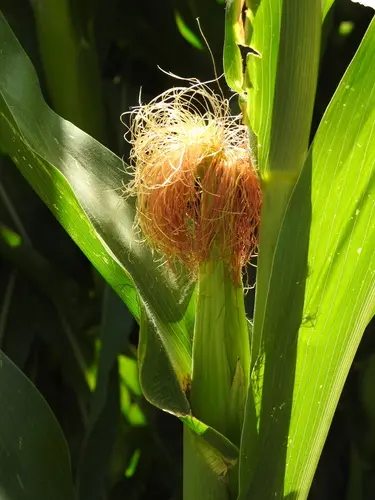
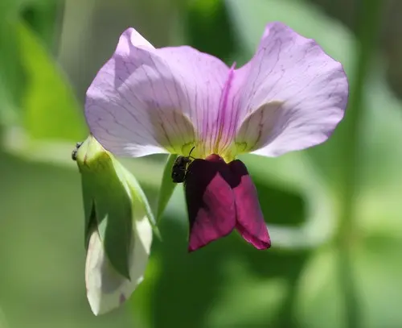


Algae, like the green algae in many ponds, are classed as protoctists in IGCSE Biology, not plants.
 InteractiveAn introduction to flowerslearn.genetics.utah.edu ↗
InteractiveAn introduction to flowerslearn.genetics.utah.edu ↗
- Carbohydrate store: Animals store glycogen; plants store starch (and sucrose).
- Cell walls & chloroplasts: Animals have neither; plants have cellulose cell walls and chloroplasts for photosynthesis.
Now you try: name two IGCSE examples of animals and two of plants.
Plants: cereals (e.g. maize), herbaceous legumes (e.g. peas, beans).
Quick check
0 / 2 doneFungi 1.2
- Can be multicellular or single-celled (yeast).
- Cell walls made of chitin.
- Body usually a network of fibres called a mycelium, made of hyphae which have many nuclei.
- Feed by saprotrophic nutrition: they secrete digestive enzymes onto food (extracellular digestion) and absorb the products. This is a kind of heterotrophic nutrition.
- Store carbohydrate as glycogen.
- Cannot photosynthesise.
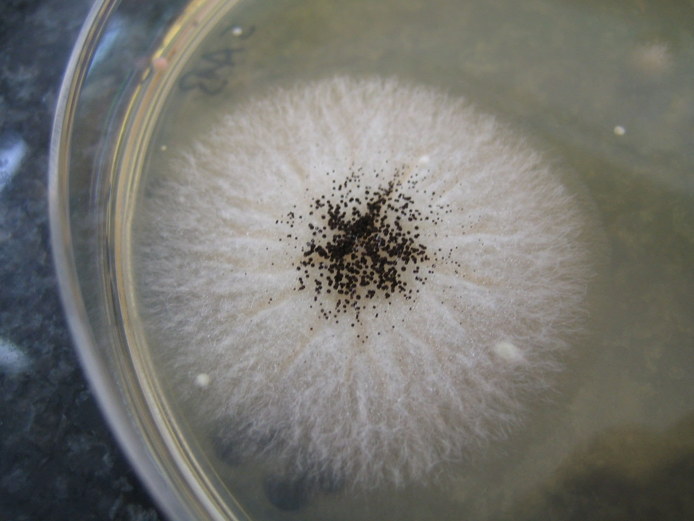
Where else is chitin found in nature?
Yeast and Mucor photos: By Bob Blaylock, CC BY-SA 3.0 · source; By Esv, CC BY-SA 3.0 · source
Mycelium: the hidden network


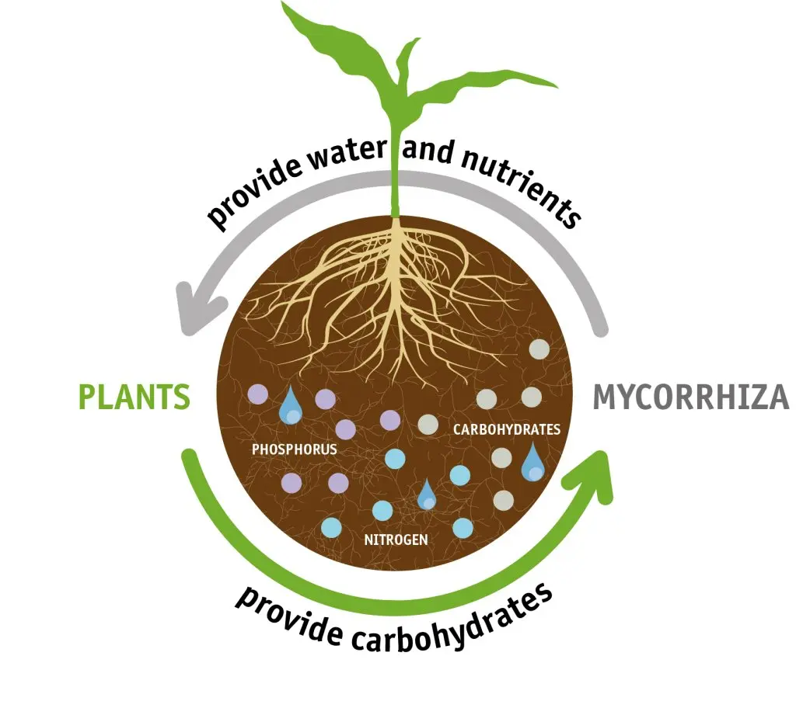
 InteractiveSPUN Underground Atlas: map of fungal networksspun.earth ↗
InteractiveSPUN Underground Atlas: map of fungal networksspun.earth ↗


Three ways to get food
| Autotrophic | Heterotrophic | Saprotrophic | |
|---|---|---|---|
| How | Make their own food by photosynthesis | Eat other organisms; digest the food inside the body | Feed on dead matter: enzymes digest it outside the body, then the products are absorbed |
| Examples | Plants, Chlorella, a few bacteria | Animals, Amoeba, most bacteria | Fungi, many bacteria |
Fungi have chitin cell walls (not cellulose), store glycogen (not starch), have no chloroplasts, and feed by saprotrophic nutrition — secreting extracellular enzymes onto dead matter and absorbing the digested products.
Quick check
0 / 2 doneBacteria 1.3
- Microscopic, single-celled, with no nucleus (prokaryotic).
- Have a cell wall (made of peptidoglycan), cell membrane and cytoplasm.
- Have one circular chromosome of DNA.
- Some contain plasmids (small loops of DNA).
- Some have a capsule or slime layer (extra protection, e.g. against drying out or toxins).
- Some species have flagella for movement.
- Most feed off other living or dead organisms; some can photosynthesise.


Both: By Doc. RNDr. Josef Reischig, CSc., CC BY-SA 3.0 · source, source 2
VideoBacteria moving towards foodyoutube.com ↗

Inside a bacterium: David Goodsell’s paintings

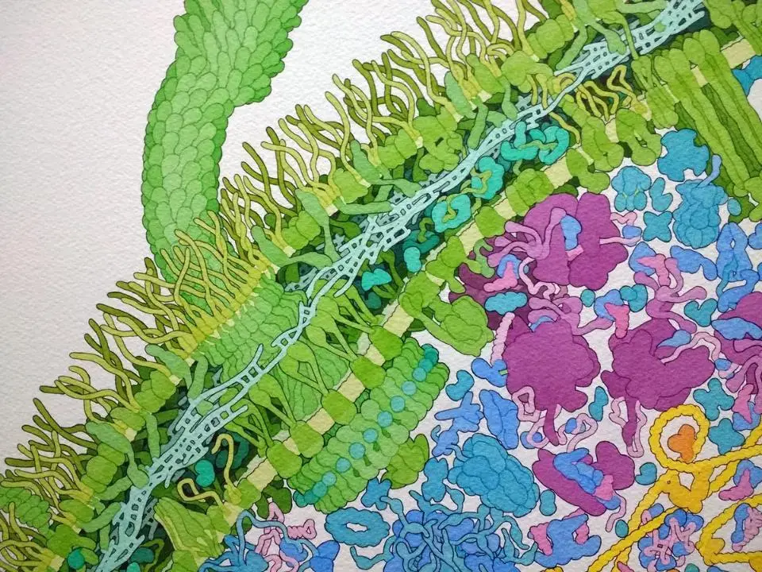
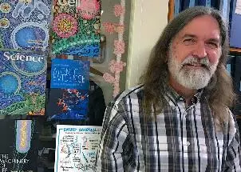

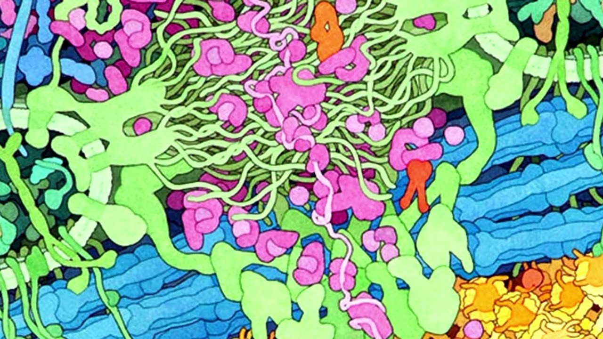
VideoInside the Cell: The Molecular Art of David Goodsellyoutube.com ↗ GalleryDavid Goodsell’s gallery of molecular paintingspdb101.rcsb.org ↗
GalleryDavid Goodsell’s gallery of molecular paintingspdb101.rcsb.org ↗Protoctists 1.2
- A strange collection of simple organisms that don’t fit into the other groups, so often called the “dustbin” kingdom.
- Microscopic and mostly single-celled.
- Some are more like animals, some more like plants.
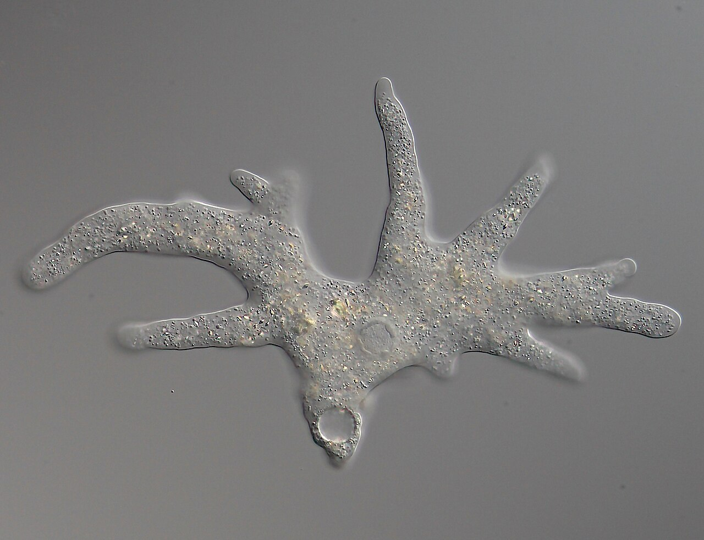
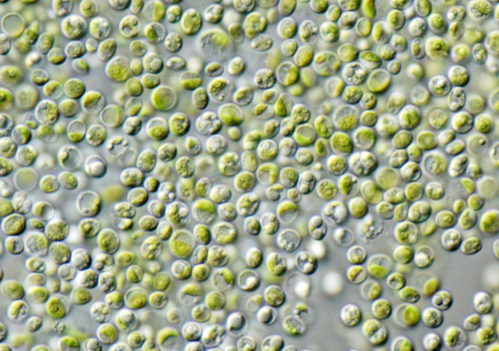
Chlorella: By Picturepest, CC BY 2.0 · source
A pathogenic protoctist: Plasmodium causes malaria.
 VideoAmoeba eating another organismyoutube.com ↗
VideoAmoeba eating another organismyoutube.com ↗
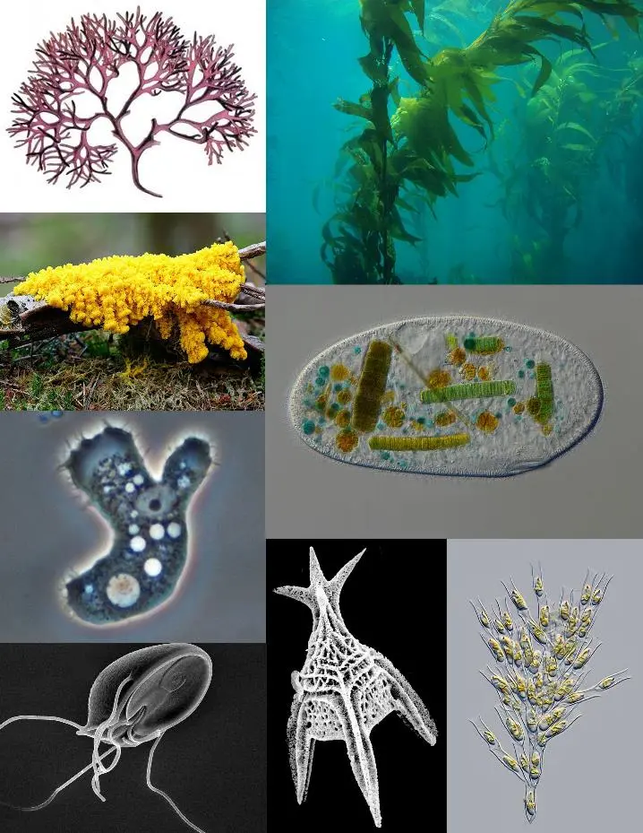
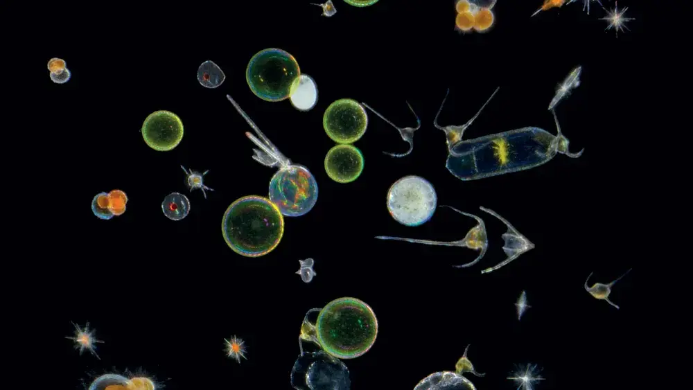
Quick check
0 / 2 donePathogens 1.4
Pathogen: a microorganism that causes disease. Pathogens may be fungi, bacteria, protoctists or viruses.
 VideoWhat is a pathogen? Communicable diseaseyoutube.com ↗
VideoWhat is a pathogen? Communicable diseaseyoutube.com ↗
| Pathogen | Type | Disease | |
|---|---|---|---|
| Trichophyton | Fungus | Athlete’s foot | 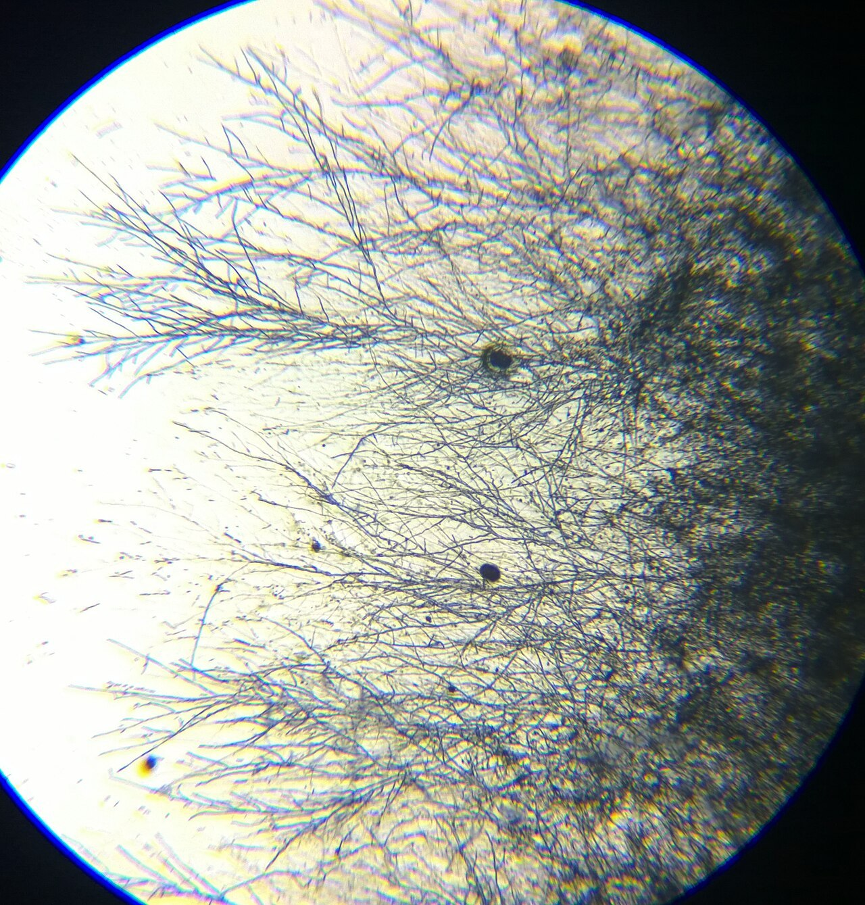 |
| Vibrio cholerae | Bacterium | Cholera · video ↗ | 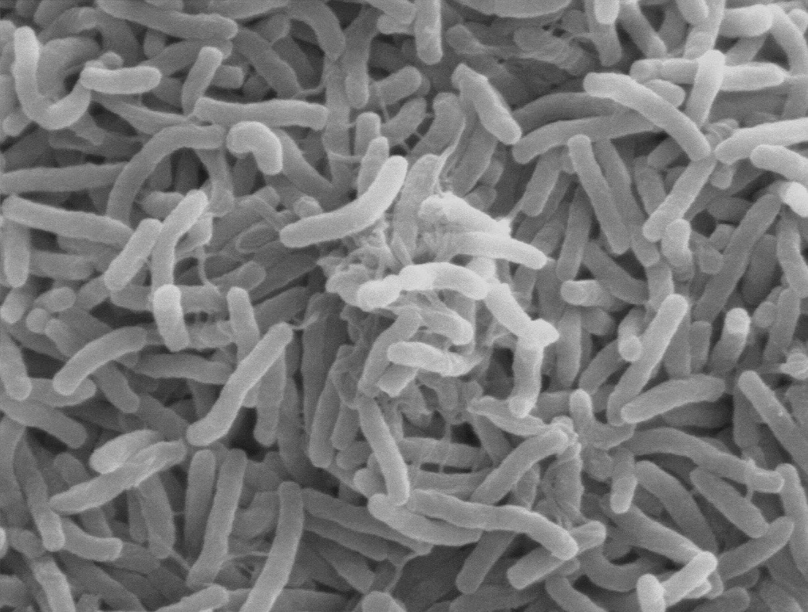 |
| Plasmodium | Protoctist | Malaria · video ↗ | 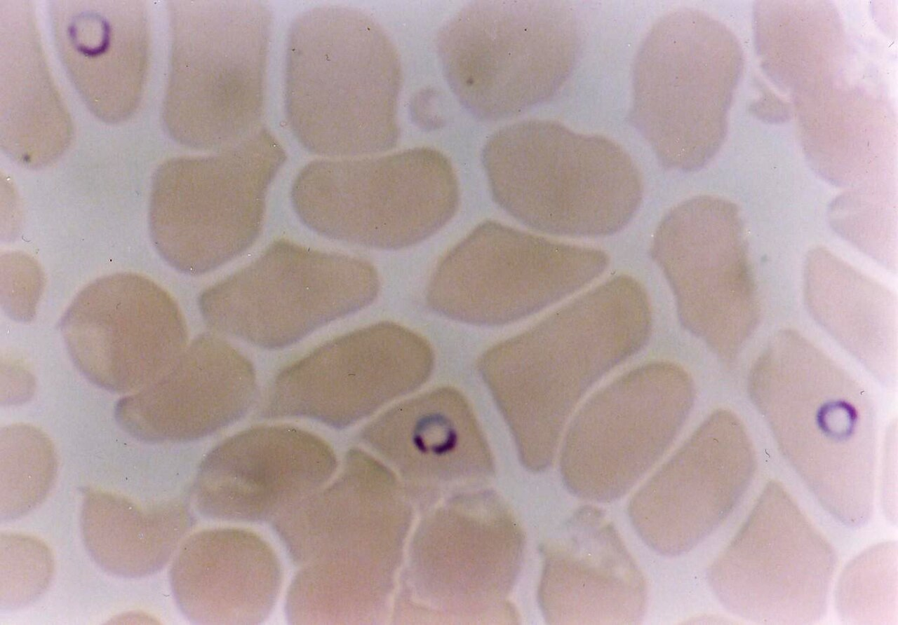 |
| Influenza virus | Virus | Flu · video ↗ | 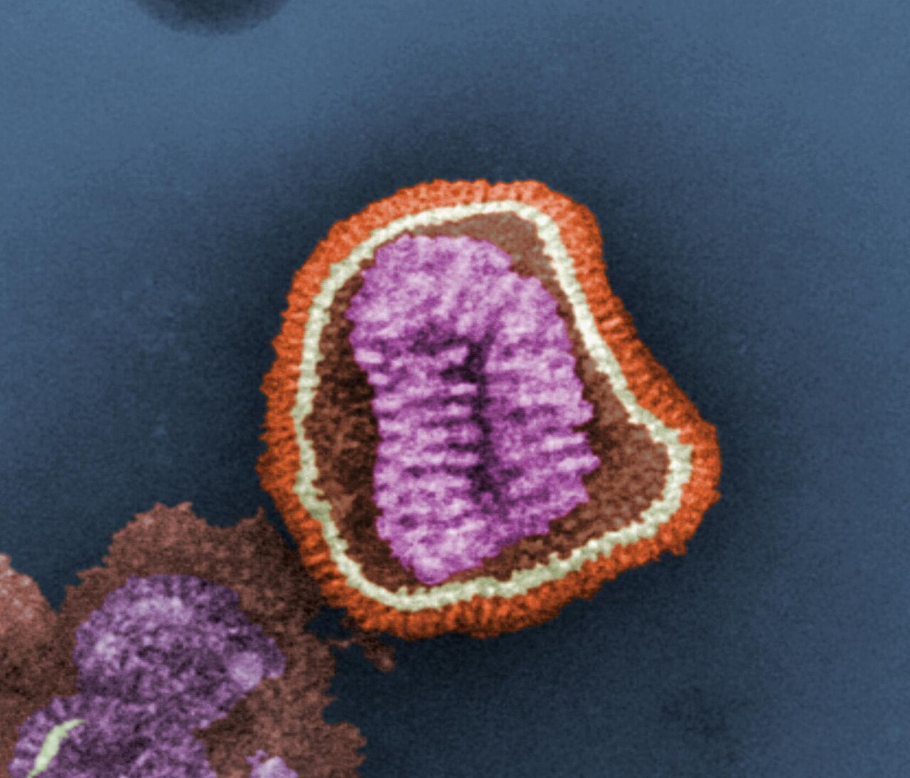 |
Named pathogens and diseases by group
| Group | Organism / pathogen → disease (★ = named in the IGCSE specification) |
|---|---|
| Fungi | Trichophyton → athlete’s foot · Candida → thrush · Diplocarpon → rose black spot |
| Bacteria | ★ Pneumococcus → pneumonia · Vibrio cholerae → cholera · Salmonella → food poisoning · Mycobacterium → tuberculosis (TB) |
| Protoctists | ★ Plasmodium → malaria · Entamoeba → amoebic dysentery · Phytophthora → potato blight |
| Viruses (not a kingdom) | ★ Influenza virus → flu · ★ HIV → AIDS · ★ Tobacco mosaic virus → leaf mottling · Measles virus → measles |
Animals and plants are not microbial pathogens (though animals such as mosquitoes can carry pathogens as vectors).
Viruses 1.4
- Not made of cells. Basic structure: genetic material (DNA or RNA) surrounded by a protein coat.
- Not considered alive, because they don’t do MRS C GREN.
- Much smaller than bacterial cells.
- Are parasites: they can only reproduce inside living cells, harming the host.
- Can cause disease in organisms of any kingdom.
- Come in a wide variety of shapes and sizes.

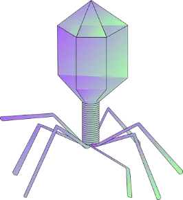
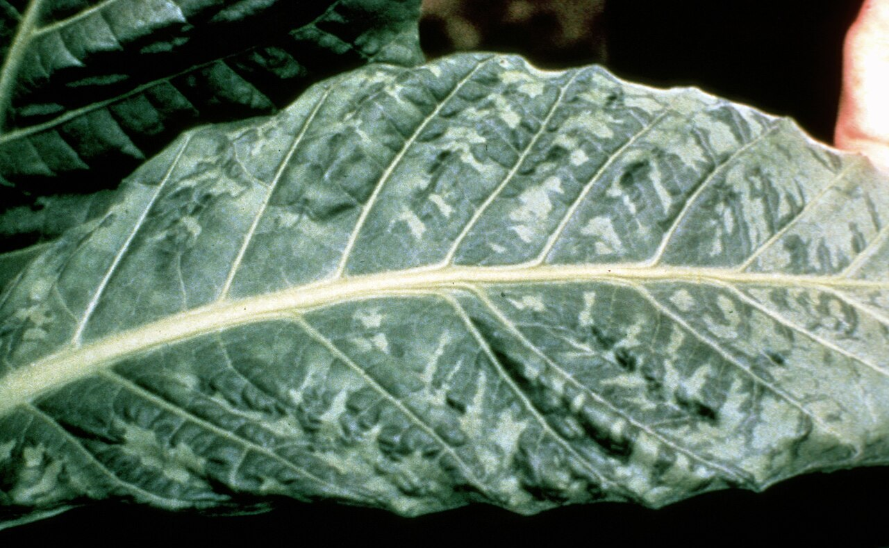
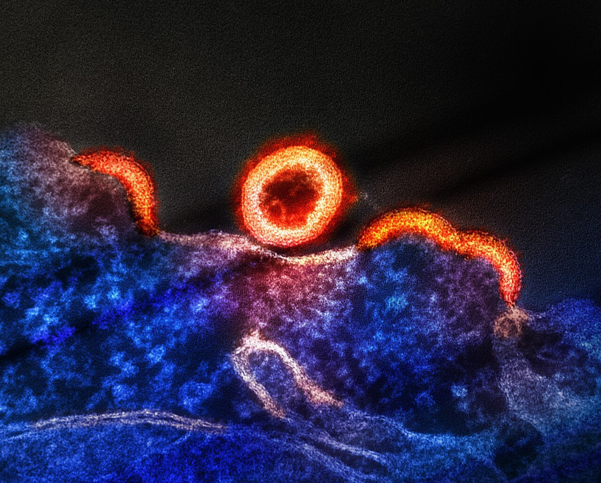
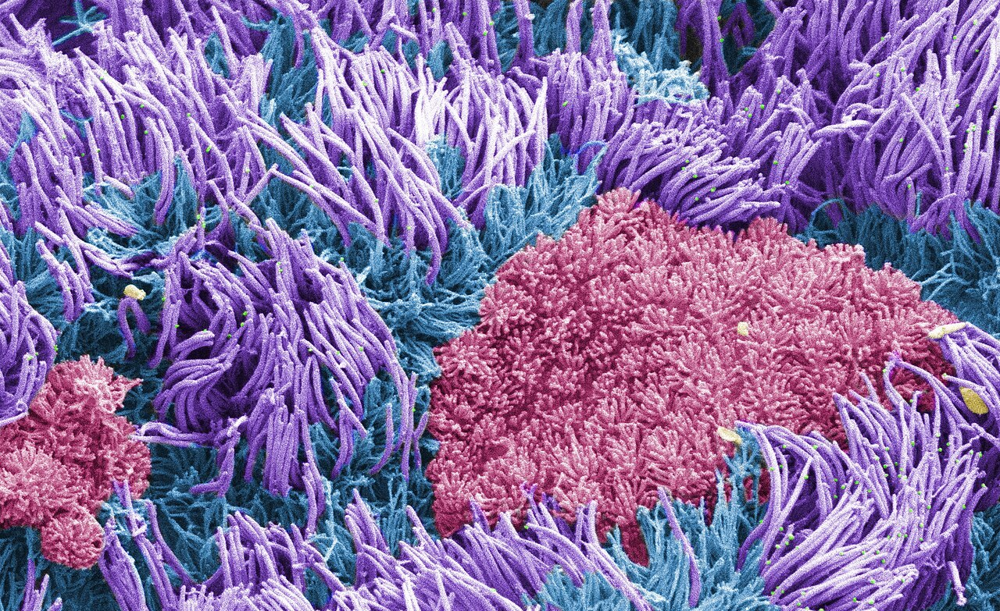
Viruses at work: David Goodsell’s paintings

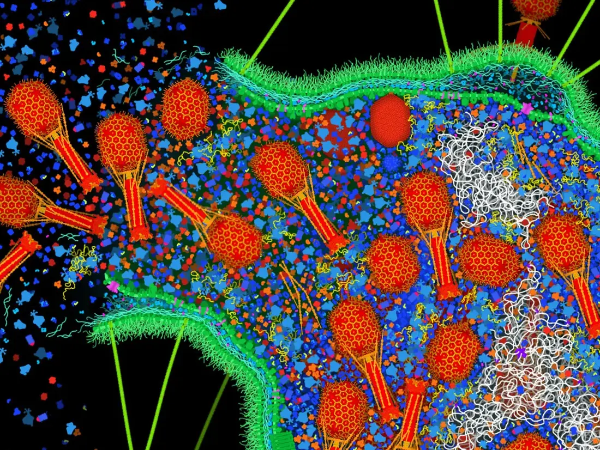
ArticleMolecule of the month: bacteriophagepdb101.rcsb.org ↗ArticleHIV and AIDS (PDB-101)pdb101.rcsb.org ↗How big?
Added photo credits (Wikimedia Commons): Red-eyed tree frog (Rhododendrites, CC BY-SA 4.0); Worker bees (Todd Huffman, CC BY 2.0); Rhinoceros beetle (Basile Morin, CC BY-SA 4.0); Brown crab (Hans Hillewaert, CC BY-SA 4.0); Caribbean reef squid (Nick Hobgood, CC BY-SA 3.0); Trichophyton (Korinna, CC BY 4.0); Vibrio cholerae (Dartmouth EMF); Plasmodium (Ernst Hempelmann, PD); Influenza TEM (CDC/Goldsmith, PD); Moon jellyfish (Luc Viatour, CC BY-SA 3.0); Madonna lily (Stan Shebs, CC BY-SA 3.0); Coral reef (Toby Hudson, CC BY-SA 3.0); Redwoods (Chris Rycroft, CC BY 4.0); Amoeba proteus (SmallRex, CC BY-SA 4.0); Chlorella vulgaris (NEON_ja, CC BY-SA 3.0); HIV in blood plasma (David Goodsell / RCSB PDB-101, CC BY 4.0).
Viruses are not living cells — they have no cytoplasm, no membrane and no ribosomes, only a protein coat surrounding DNA or RNA. They are all parasitic and can only reproduce inside living host cells.
Quick check
0 / 2 donePractice
True or false?
Which group?
Exam-style question: complete the table [5]
| Kingdom | Carbohydrate store | Cell wall | Nucleus present |
|---|---|---|---|
| Animal | …… | …… | Yes |
| …… | Starch | Cellulose | Yes |
| Bacteria | Glycogen | Peptidoglycan | …… |
| Fungi | Glycogen | …… | Yes |


End-of-topic test
Test yourself without looking back! Answer the multiple-choice questions, write your own long answers, then check the mark schemes.